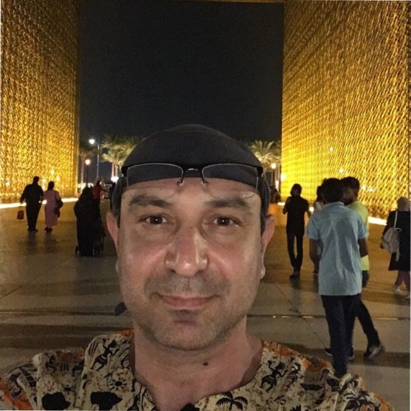

Recognized for persistence, calmness under pressure and a practical approach in demanding industrial environments. Strong analytical mindset with attention to accuracy in both technical evaluation and communication, combined with the ability to identify critical issues and maintain clear focus during complex commissioning and start-up activities. Able to remain composed under challenging conditions while maintaining effective cooperation with teams, contractors and clients for safe and reliable project execution.
Commissioning Manager / Senior Commissioning Engineer with international experience in power generation and industrial energy projects (GTCC, WtE, CHP, WHB). Proven track record in leading multi-disciplinary commissioning teams, coordinating EPC contractors, managing complex start-up and handover activities under demanding site conditions. Strong expertise in planning and execution of commissioning phases, including pre-commissioning, system integration, performance testing and reliability run. Hands-on experience of power plant packages including GT, ST, HRSG, DCS and BOP systems. Familiar with ABB, GE, METSO, Honeywell and Siemens DCS platforms, participating in tuning and optimization of plant systems.
Select a category to view projects
Period: 09.2025 – 01.2026
Company: BW Water
Position: Lead Commissioning / System Completion & Handover Engineer
Project Type: WHB / Industrial Energy / Water Treatment Systems
Lead commissioning, system completion and handover activities for CUB/FAB water treatment systems, including turnover process, walkdowns, documentation review, pre-commissioning follow-up, pressure testing, flushing and commissioning activities.
Period: 08.2020 – 01.2021
Company: TEC LT
Position: Lead System Commissioning & Handover Engineer
Project Type: CHP / WtE
Lead commissioning, system completion and handover activities for BOP systems. Involved in start-up and operational support of WtE boiler systems, including walkdowns, flushing, blowing and commissioning follow-up.
Period: 09.2018 – 07.2019
Company: SAIPEM
Position: Commissioning Scheduler & Handover Engineer
Project Type: GTCC
Scheduling and monitoring of installation, pre-commissioning and commissioning activities in Primavera P6, including handover documentation packages, walkdowns, punch list management and commissioning progress coordination.
Period: 12.2017 – 03.2018
Company: SIEMENS
Position: Lead Commissioning Engineer
Project Type: GTCC
Lead commissioning activities for NEM HRSG systems, including chemical cleaning, flushing, steam blowing, commissioning, start-up and performance testing.
Period: 09.2016 – 07.2017
Company: Hitachi Zosen Inova
Position: Lead BOP System Commissioning & Completion Engineer
Project Type: WtE / CHP
Lead commissioning and system completion activities for BOP systems, including flushing, tuning, start-up and operational support. Participation in handover process, walkdowns and punch list close-out.
Period: 09.2014 – 09.2015
Position: Independent Commissioning Consultant
Project Type: HFO PP / Power & Water
Commissioning consultancy for heavy oil boilers, including chemical cleaning, flushing and steam blowing, as well as boiler handover process activities, walkdowns, punch list initiation and punch list close-out.
Period: 10.2011 – 03.2012
Company: METKA
Position: Commissioning Scheduler & Handover Eng.
Project Type: GTCC
Coordination and scheduling in Primavera P6 and MS Project of pre-commissioning, commissioning and handover package activities for GTCC systems.
Period: 08.2010 – 03.2011
Company: METKA
Position: Commissioning Manager: Scheduling / System Completion /
Project Type: GTCC
Scheduling and support of commissioning activities including HRSG chemical cleaning, flushing and air blowing, as well as BOP system completion and handover process coordination.
Period: 11.2007 – 10.2009
Company: METKA
Position: Lead Commissioning Engineer
Project Type: GTCC
Lead commissioning activities including system commissioning, system completion, handover coordination and documentation for GTCC systems. Participation in start-up, performance testing and Reliability Run Test.
Period: 03.2007 – 10.2007
Company: METKA
Position: I&C Commissioning Engineer
Project Type: CHP
Instrumentation and Control commissioning for CHP power plant BOP and HRSG instrumentation and DCS-related commissioning activities.
Period: 08.2023 – 04.2024
Company: ESBI
Position: Mechanical Commissioning Engineer
Project Type: GTOC
Mechanical commissioning activities including pre-commissioning follow-up, turnover package review, performance test and Reliability Run Test support for Siemens open cycle power plant systems.
Period: 02.2023 – 06.2023
Company: ILF Consulting Engineers
Position: Senior Commissioning Engineer
Project Type: GTCC
Senior commissioning engineering support for GTCC handover process, contractual performance testing, Reliability Run Test and coordination between EPC contractor and client.
Period: 09.2024 – 04.2025
Position: Commissioning Manager
Project Type: WHB / Energy Recovery
Coordination of contractors and commissioning preparation activities for energy recovery power plant, including scheduling follow-up, procedure review and vendors-contractors management.
Period: 12.2021 – 04.2022
Position: Commissioning Manager
Project Type: GTOC
Coordination of commissioning schedules, resource planning and commissioning interfaces during open cycle power plant execution.
Period: 05.2021 – 09.2021
Position: Commissioning Manager
Project Type: GTCC
Management and monitoring of commissioning activities, review of commissioning procedures and schedule coordination with EPC contractor.
Period: 05.2018 – 09.2018
Position: Deputy Commissioning Manager
Project Type: GTCC
Coordination and follow-up of commissioning activities, TA mobilization scheduling and synchronization of commissioning interfaces between project teams and client.
Period: 10.2015 – 07.2016
Position: Commissioning Manager / Owner’s Engineer
Project Type: HFO PP / Thermal Power Plant
Owner’s Engineer support for commissioning activities, schedule follow-up, procedure review and coordination with EPC contractor during commissioning execution.
Period: 12.2012 – 08.2014
Position: Commissioning Manager
Project Type: HFO PP / Marine Facilities / Sea Water Cooling
Commissioning management activities for marine facilities and seawater cooling systems supporting thermal power and industrial utility infrastructure.
Period: 08.2005 – 01.2007
Position: Shift Team Leader – Commercial Operation
Project Type: GTCC
Operation, start-up and shutdown activities, DCS-based optimization of combined cycle systems and coordination between operation and maintenance teams, including PTW and LOTO activities.
Period: 05.2004 – 09.2004 & 05.2005 – 07.2005
Position: Operator
Project Type: GTOC
Installation support and operation of LM2500 gas turbine units.
Email: sakkam@outlook.com
Available WORLDWIDE for commissioning and start-up projects.